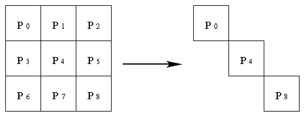

hyPACK-2013 Mode 1 : MPI 1.X Derived Datatype; Groups, Topologies- MPI Lib. Calls
|
Module 4 : MPI programs using MPI
Dervied Data types, Topologies, Group Communicators Library Calls and
execute on Message Passing
Cluster or Multi Core Systems that support MPI library.
|
|
|
Example 4.1
|
Write MPI program to to build a general derived datatypes in which process with rank 0
broadcast struct having two float and an int values.
|
Example 4.2
|
Write MPI program to build derived datatype in which process with rank 0 sends one row entries of
a two dimensional real array, which are contiguous entries of two dimensional real array to the process
with rank 1.
|
Example 4.3
|
Write MPI program to build derived datatype in which process with rank 0 sends
entries of a two dimensional real array, which are equally spaced (Non-contiguous) column entries of a
two dimensional real array to the process with rank 1.
Use MPI_Type_Vector, MPI_Type_Commit library calls.
|
Example 4.4
|
Write MPI program to build derived datatype in which process with rank 0 sends upper triangular
portion of a square ematrix to the process with rank 1. You have to use MPI_Type_Indexed
library call, MPI_Type_Commit library calls.
|
Example 4.5
|
Write MPI program to broadcast the data from the process with rank 0 to the
other process in which elements of noncontiguous data are in structure type. Use MPI_Pack and MPI_Unpack
ibrary calls.
|
Example 4.6
|
Write MPI program to construct a communicator consisting of group of diagonal
processes in a square grid of processes using MPI group communicators.
|
Example 4.7
|
Write MPI program to construct a distinct communicators from group of square grid of
processes using MPI_Comm_Split library calls
|
Example 4.8
|
Write MPI program to construct virtual topology i.e.,
Cartesian topology from a group of processes in a square grid of processes and print the rank in the Cartesian communicator.
Use MPI_Cart_create, MPI_Cart_rank, and MPI_Cart_coords library calls.
|
Example 4.9
|
Write MPI program to partition a grid into grids of lower dimension from a group of processes
in a square grid of processes using MPI Cartesian topology and print the rank in the Cartesian communicator.
Use MPI_Cart_create, MPI_Cart_rank, MPI_Cart_coords, and MPI_Cart_sub library calls.
(Assignment)
|
(Source - References :
Books
Multi-threading
-
[MC-MPI-02], [MCMPI-06], [MCMPI-07], [MCMPI-09], [MC-MPI10], [MCMPI-11],
[MCMTh-12],[MCBW-44], [MCOMP-01])
|
|
Description of Programs - MPI Dervied Datatypes, Groups & Virtual
Topology concepts
|
 Example 4.1:
Example 4.1:
|
Write MPI program to to build a general derived datatypes in which process with rank 0
broadcast struct having two float and an int values.
(Download source code :
general-derived-datatype.c
)
|
Objective
Write MPI program to to build a general derived datatypes in which process with rank 0
broadcast struct having two float and an int values.
Description
Given a struct consists of three elements two floats (a,b) and one int (n)
variables and this eample explains the transmission of these three elements of struct to other
processes. Assume that the these three elements i.e. a = 0.0, b = 1.0; & C = 1024 are assigned with address
starting from 24, 40, 48 respectively.
A general MPI datatype or dervied datatype is a sequence of pairs
{
(t0, t0),
(t1, t1),
(t2, t0),
..................
(tn-1, tn-1),
Where each ti is a basic MPI datatype and each di is a displacement in
bytes.Recall that the basic MPI datatypes are predefined in C : MPI_INT, MPI_CHAR, MPI_FLOAT etc.....
The MPI derived datatypeis used to incorporate a, b, & c into a single message.
You have to use MPI_Type_struct, MPI_Address, and MPI_Type_commit library calls.
to write this program.
Input None
Output
Each Process prints the elements of struct

|
Example 4.2:
|
Write MPI program to build derived datatype in which process with rank 0 sends one row entries of
a two dimensional real array, which are contiguous entries of two dimensional real array to the
process with rank 1.
(Download source code :
array-contiguous-memory.c
)
|
Objective
Write MPI program to build derived datatype in which process with rank 0 sends one row entries of
a two dimensional real array, which are contiguous entries of two dimensional real array to
the process with rank 1.
Description
Given a Two dimensional real array float A[10][10] , the aim is to send 7th row from
process with rank 0 to process with rank 1. Assume that the program is written in c-language
and it is well known that the C-language code stores two-dimensional arrays in row-major order. For example,
the memory of A[6][2] is preceded by A[6][1] and followed by A[6][3]. The memory locations of
starting at A[6][0] are A[6][0], A[6][1], A[6][2], A[6][3],.............A[6][9] i.e. the 7th row of
two dimensional array A are stored in contiguous memory locations.
You have to use MPI_Send,and MPI_Recv, library calls to write this program.
Input
Input file 1
The input file for Two dimansioanl real array should strictly adhere to the following
format.
#Line 1 : Number of Rows (m), Number of columns(n).
#Line 2 : (data) (in row-major order. This means
that the data of second row follows that of the first and so on.)
A sample input file for twod-dimensional array (10 x 10) is given below
10 10
6.0 2.0 3.0
4.0 6.0 8.0
9.0 7.0 4.0
3.0
2.0 84.0 6.0
4.0 3.0 2.0
3.0 2.0 6.0
5.0
3.0 6.0 68.0
2.0 4.0 3.0
7.0 1.0 6.0
3.0
4.0 4.0 2.0
59.0 6.0 4.0
8.0 6.0 5.0
3.0
6.0 3.0 4.0
6.0 93.0 8.0 3.0
2.0 3.0 4.0
8.0 2.0 3.0
4.0 8.0 17.0 13.0
8.0 2.0 4.0
9.0 8.0 9.0
9.0 4.0 6.0
7.0 6.0 4.0
9.0
2.0 7.0 1.0
8.0 1.0 1.0
4.0 8.0 2.0
6.0
8.0 6.0 3.0
3.0 7.0 8.0
4.0 2.0 6.0
4.0
8.0 3.0 2.0
8.0 6.0 4.0
9.0 5.0 3.0
3.0
Output
Process with Rank 1 prints the elements of the 7th row of two dimensional real array
|
Example 4.3:
|
Write MPI program to build derived datatype in which process with rank 0 sends entries of a
two dimensional real array, which are equally spaced (Non-contiguous) column entries of a two
dimensional real array to the process with rank 1.
(Download source code :
array-non-contiguous-memory.c
)
|
Objective
Write MPI program to build derived datatype in which process with rank 0 sends one row entries of
a two dimensional real array, which are contiguous entries of two dimensional real array to
the process with rank 1.
Description
Given a Two dimensional real array float A[10][10] , the aim is to send 7th column from
process with rank 0 to process with rank 1. Assume that the program is written in c-language. it is well known that the C-language code stores two-dimensional arrays in row-major order. For example,
the memory of A[6][2] is preceded by A[6][1] and followed by A[6][3]. The memory locations of
starting at A[6][0] are A[6][0], A[6][1], A[6][2], A[6][3],.............A[6][9] i.e. the 7th row of
two dimensional array A are stored in contiguous memory locations. It is also observed that the displacement
of A[0][7] to A[1][7], A[1][7] to A[2][7] is 10 float values. In other words, the entries of
the 7th column are equally spaced. The concept of MPI type i.e. , new_mpi_type MPI_Datatype
is required and in this case user can define column_mpi_type can be used to send any column of
two dimensional Array.
You have to use MPI_Type_Vector,and MPI_Type_Commit, library calls to write this program.
Input
Input file 1
The input file for Two dimansioanl real array should strictly adhere to the following
format.
#Line 1 : Number of Rows (m), Number of columns(n).
#Line 2 : (data) (in row-major order. This means
that the data of second row follows that of the first and so on.)
A sample input file for twod-dimensional array (10 x 10) is given below
10 10
6.0 2.0 3.0
4.0 6.0 8.0
9.0
7.0 4.0 3.0
2.0 84.0 6.0
4.0 3.0 2.0
3.0
2.0 6.0
5.0
3.0 6.0 68.0
2.0 4.0 3.0
7.0
1.0 6.0
3.0
4.0 4.0 2.0
59.0 6.0 4.0
8.0
6.0 5.0
3.0
6.0 3.0 4.0
6.0 93.0 8.0
3.0
2.0 3.0 4.0
8.0 2.0 3.0
4.0 8.0 17.0
13.0
8.0 2.0 4.0
9.0 8.0 9.0
9.0 4.0 6.0
7.0
6.0 4.0
9.0
2.0 7.0 1.0
8.0 1.0 1.0
4.0
8.0 2.0
6.0
8.0 6.0 3.0
3.0 7.0 8.0
4.0
2.0 6.0
4.0
8.0 3.0 2.0
8.0 6.0 4.0
9.0
5.0 3.0
3.0
Output
Process with Rank 1 prints the elements of the 7th column of two dimensional real array
|
Example 4.4:
|
Write MPI program to build derived datatype in which process with rank 0 sends upper triangular
portion entries of square matrix to the process with rank 1.
(Download source code :
upper-traingular-portion-ddtype.c
)
|
Objective
Write MPI program to build derived datatype in which process with rank 0 sends upper triangular
portion entries of square matrix to
the process with rank 1.
Description
Given a real square matrix float A[10][10] , the aim is to send upper triangular
matrix i.e non-zero entris of each row of the squre matrix from
process with rank 0 to process with rank 1.
Assume that the program is written in c-language. it is well known that the C-language code stores two-dimensional arrays in row-major order. For example,
the memory of A[6][2] is preceded by A[6][1] and followed by A[6][3]. The memory locations of
starting at A[6][0] are A[6][0], A[6][1], A[6][2], A[6][3],.............A[6][9] i.e. the 7th row of
two dimensional array A are stored in contiguous memory locations.
You have to use MPI_Type_Indexed and MPI_Type_Commit, library calls to write this program.
Input
Input file 1
The input file for square matrix should strictly adhere to the following
format.
#Line 1 : Number of Rows (m), Number of columns(n) of square matrix
#Line 2 : (data) (in row-major order. This means
that the data of second row of squre matrix follows that of the first and so on.)
A sample input file for twod-dimensional array (10 x 10) is given below
10 10
6.0 2.0 4.0
5.0 6.0 1.0
7.0 8.0 8.0
2.0
0.0
8.0 3.0
7.0 6.0 4.0
9.0 2.0 5.0
8.0
0.0 0.0
68.0
3.0 7.0 2.0
4.0 9.0 5.0
7.0
0.0 0.0 0.0
59.0 5.0 4.0
3.0 9.0 3.0
6.0
0.0 0.0 0.0
0.0
12.0 4.0 7.0
3.0 4.0 2.0
0.0 0.0 0.0
0.0 0.0
21.0 4.0
6.0 9.0 6.0
0.0 0.0 0.0
0.0 0.0 0.0
32.0 4.0 7.0
9.0
0.0 0.0 0.0
0.0 0.0 0.0
0.0
42.0 5.0
7.0
0.0 0.0 0.0
0.0 0.0 0.0
0.0 0.0
6.0
8.0
0.0 0.0 0.0
0.0 0.0 0.0
0.0 0.0 0.0
3.0
Output
Process with Rank 1 prints the elements of the Upper traingular matrix entries in a row-wise
|
Example 4.5:
|
Write MPI program to broadcast the data from the process with rank 0 to the other
process in which elements of noncontiguous data are in structure type. Use MPI_Pack and MPI_Unpack l
ibrary calls.
(Download source code :
memory-pack-unpack.c
)
|
Objective
Write MPI program to broadcast the data from the process with rank 0 to the other process
in which elements of noncontiguous data are in structure type.
Use MPI_Pack and MPI_Unpack ibrary calls.
Description
Given a struct consists of three elements two floats (a,b) and one int (n)
variables and this eample explains the transmission of these three elements of struct to other
processes. Assume that the these three elements i.e. a = 64.0, b = 200.0; & C = 1024 are assigned with address
starting from 24, 40, 48 respectively.
A general MPI datatype or dervied datatype is a sequence of pairs
{
(t0, t0),
(t1, t1),
(t2, t0),
..................
(tn-1, tn-1),
Where each ti is a basic MPI datatype and each di is a displacement in
bytes.Recall that the basic MPI datatypes are predefined in C : MPI_INT, MPI_CHAR, MPI_FLOAT etc.....
The MPI derived datatypeis used to incorporate a, b, & c into a single message.
MPI_Pack and MPI_Unpack library calls can be used to grouping of data. MPI_Pack allows one to
exlicitly store non-contiguous data in contiguous memory locations, and MPI_Unpack can be used to
copy the data from a contiguous buffer into non-contiguous memory locations.
Process with rank reads the values and broadcast these values to other process. The process with
rank 0 uses MPI_Pack library calls and other processes use MPI_Unpack library calls.
Input
Input file 1
The Process with rank 0 reads the three values a, b, and n.
format.
Output
Process with Rank greater than 1 prints the output values a, b, and n

|
Example 4.6:
|
Description for implementation of MPI program to construct a communicator
consisting group of diagonal processors in a square grid of processors using MPI group library calls
(Download source code :
multiple-communicators.c
)
|
Objective
Write a MPI program to create a diagonal communicator group of processors in a
square grid processes on cluster.
Description
Bakground : Communicators, Contexts & Groups
In MPI, there are two types of communicators : Intra-communicators and inter-comminicators .
Intra-communicators are essentially a collection of processe that can send messages to each other and engage in
collective communication opertions. Inter-communicators , are used for sending messages between processes belonging
to the disjoint intra-communicators. A minimal ( intra ) communicator is composed of
a group
a context
A group is an ordered collection of porcesses. If a group consists of p processes, each processe in the
group is assigned a unique rank , which is just a nonnegative integer in the range 0, 1, 2, ......, p-1.
Groups and communicators are opaque objects
A context is a system defined object that uniquely idnetifies a communicator. Two distinct
communicators will have different contexts, even if they have identical underlying groups.
A context is system defined tag that is associated with a group in a communicator.
Contexts are used to insure that messages are received correctly.
In MPI environment, no messages can be received by any process unless the communicator used by the sending process
is idnetical to the communicator used by the receving process which is true for MPI point-to-Point and
Collective Communications. Since distinct communicators use the distinct contexts, the system can check whether
two communictors are identical by simply checking whether the contexts are identical.
Contexts are not explicitly used in any MPI functions. Rather they are implicitly associated with groups when
communicators are created.
To understand contexts better, one can define a group to be an array, a group, and the rank of process i in the group would
correspond to rank group[1] in MPI_COMM_WORLD. Foe example, MPI program running with nine processes, i.e. MPI_COMM_WORLD consits of nine processes. It is convenient to view nine processes as a 3X3 grid in which second row communicator composed of processes 3,4, and 5 from MPI_COMM_WORLD. Thus, group[0] = 3; group[1]= 4; group[2] = 5
and process 0 in the second row communicator would be the same as process 3 in MPI_COMM_WORLD, process 1 the
same as process 4, and process 2 the same as process 5.
Let us assume that we have created a communicator whose underlying group consists of the processes in the first
row of our virtual grid. Supose the MPI_COMM_WORLD consits of p processes, where q2 = p.
Let us also suppose that our first row of prcesses consists of the processes with ranks 0,1,2,...., q-1.
Now a group of new communicators can be created using MPI_Comm_Group, MPI_Group_incl, MPI_Comm_Create library
calls. MPI_Coom_Create is collecive operation and associates a context with the group and creates communicator.
Assume that the number of processors is a perfect square. The processors in the
processor grid are numbered in row-wise fashion. An example of a square grid of
processors (p = 9) is described in Figure 4. Diagonal communicator consists of
diagonal processors in the square processor grid.

Figure 6. Communicator consists of diagonal processors in a 3 x 3 square
processor grid
The processors P0,P4, P8) along the diagonal
form a diagonal communicator as shown in Figure 4.6. The ranks of the processors in the diagonal
communicator will be (0,1,2). Use special ( MPI_Comm_group, MPI_Group_incl,and MPI_Comm_create )
MPI library calls.
Input
None
Output
Print the list of Process in the diagonal communicator on each process.
|
Example 4.7:
|
Write MPI program to construct a distinct communicators from group of square grid of
processes using MPI_Comm_Split library calls
(Download source code :
multiple-communicators-split.c
)
|
Objective
Write MPI program to construct a distinct communicators from group of square grid of
processes using MPI_Comm_split library calls
Description
MPI provides a function MPI_Comm_split that can create several communicators simultaneously. The library
call MPI_Comm_split creates required number of new communciators, all of them having the same name. In the
above example, it creates q new communciators where q*q = p having the same name
as my_row_comm . For example if p = 9, the group underlying my_row_comm will consits of processes
{0,1,2} on processes 0,1, and 2. On processes {3,4,5} and on processes 6,7, and 8, it will consist of
processes {6,7,8}, it will consist of processes {6,7,8}. MPI_Comm_Split is a collective call, and it must be called by all the process in old_comm (MPI_Comm).
Input
Input file
None
Output
Each Process print the Rank in old and new communicator
|
Example 4.8:
|
Write MPI program to construct virtual topology i.e., Cartesian topology from a group of
processes in a square grid of processes and print the rank in the Cartesian communicator.
(Download source code :
multiple-communicators-cartesian.c
)
|
|
Objective
Write MPI program to construct virtual topology i.e., Cartesian topology from a group of processes in a square grid of processes and print the rank in the Cartesian communicator.
Description
Background :
MPI provides topology which is a mechanism for associating different addressing schemes wih the
processes belonging to a group. MPI toplogies are virtual topologies - there may be no simple
relation between the process structure implicit in a virtual toplogy and the actual underlying physical
structure of the paralle computing system. MPI supports two types of virtual toplogies that can be created in
MPI - a Cartesian or gid toplogy and a graph toplogy. conceptually toplogies form a special case of graph
topolgies. To define cartesian toplogies, a square grid structure can be associated with MPI_COMM_WORLD and
the following information is required.
- The number of dimensions in the grid (Two)
-
The sie of each dimension i.e. the number of rows and the number of columns (Assume that q
rows and q columns in a square grid.
-
Periodicity of each dimension which indicates whether the first entry in each row of column is
adjancent to the last entry in that row or column, respectively. (For examples such as
circular shift opertions, second dimension should be periodic.
-
MPI also gives the user option of allowing the system to optimize the mapping of the grid of processes to the underlying physical processors.
Figure 2. A two-dimensional Cartesin Decomposition of a domain, also showing a shift by one in the
first dimension.
A two-dimensional Cartesisn decomposotion is shown in Figure 2 which is simply a decomposiiton in
the natural coordinates (e.g. x, y) directions. Each element of the decomposition (rectangles
in the figure 2) is labled by a coordinate tuplie indicating the position ofthe element of each of the
coordinate directions. Tuples give the coordinates as would be returned by MPI_Get_coords.
In this the communicator grid_comm is required and it contains all the processes in
MPI_COMM_WORLD (possibly reordered) and a two dimensional cartesian coordinate system that will be
associated with it. MPI_Cart_Coords library call is used to determine its coordinates.
Given the coordinates of a proces, MPI_Cart_rank returns the rank of the process
grid_rank. MPI_Cart_Create creates a new communicator cart_comm , by caching a
Cartesian topology with old_comm .
with the above information, a simple code is developed to demonstrate the MPI toplogies which can be used
in Fox's algorithm for Matrix into Matrix Multiplication.
Input
Input file
None
Output
Each Process print the Rank in cart_comm

|
| |
|